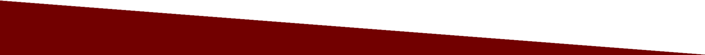
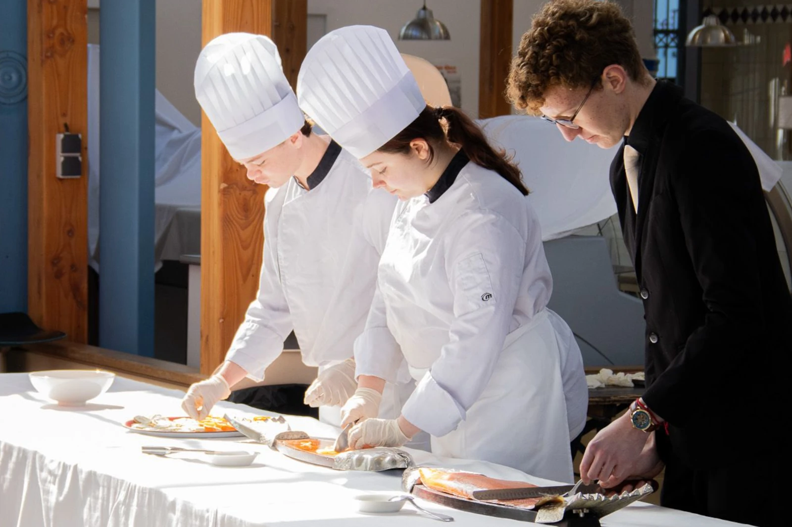
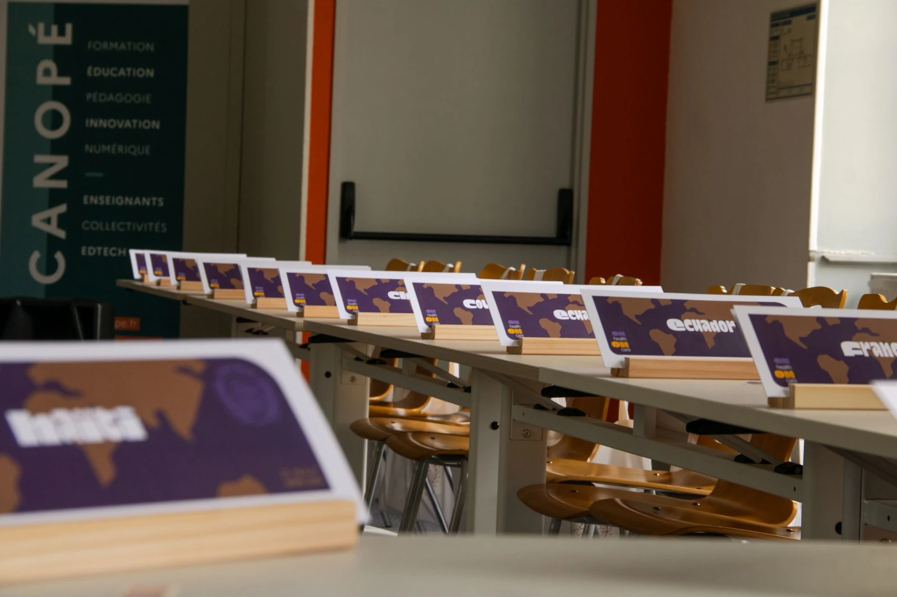

A MUN (or Model of United Nations) is a scholar simulation where participants have to act as delegates of the United Nations. The goal of these simulations is to teach students how the United Nations works as well as international diplomacy. In a MUN, the participants represent a country and are associated to a specific committee with an aimed problem. They debate about worldwide issues, negotiate with others, and write resolutions to solve the main issue (as mentioned right below). Of course, they have to keep the stance of their assigned country.
We are proud to announce that this year will be the third edition of our MUN in Chaumont, but also proud to be and forever stay the first highschool level MUN of the region. Like last years, we're pleased to give you the opportunity to suggest different committees : one in French and others in English. Those happen simultaneously in different rooms and deal with various topics. This lets us give a unique experience to everyone without having to worry about her/his linguistic knowledge. Yet, the francophone committee is not only for French, Belgians and Luxembourgish.

The tote bags which you will earn are sewed by le Vestiaire, two social inclusion workshops in Chaumont.
We then cut and then stick the design using a press by ourselves.

Thursday lunch will be provided by the "hotel courses" section of the Denis Diderot highschool of Langres. It is composed of alcoholless cocktails, small appetizers as well as succulent desserts.

Every design is made each year by the students of DNMADE during a workshop, managed by their teacher, Miss Thoyer. To learn more about it, visit our page concerning "our school ".